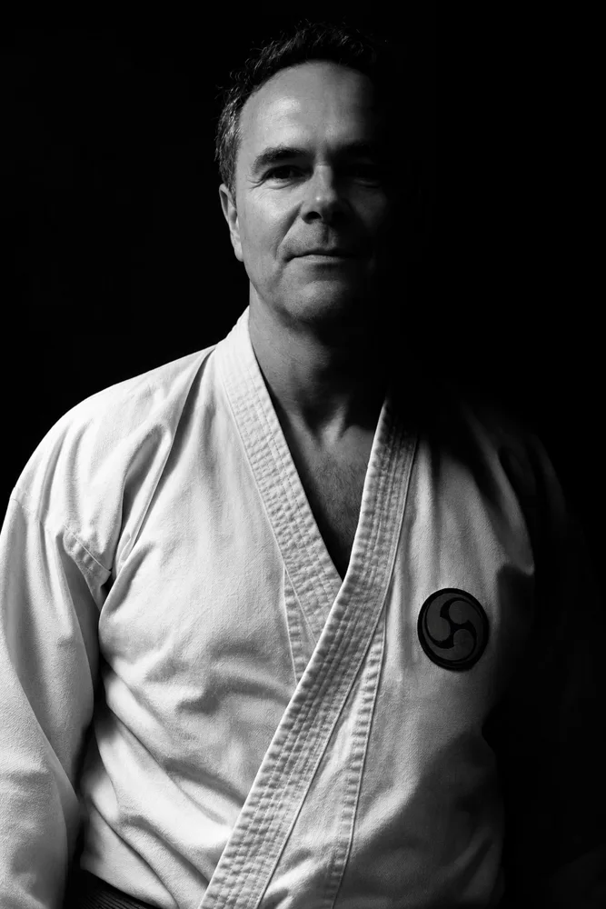

Kraft & Kondition
Beim Training stärkst du deinen ganzen Körper und verbesserst deine Kondition.
Traditionelles Shotokan-Karate für Jugendliche ab 10 Jahren und Erwachsene. Dein erstes Training ist kostenlos, auch ohne Vorkenntnisse oder Karateanzug.

Wir sind ein Karateverein in Baden und trainieren im traditionellen Shotokan-Stil. Dabei verbinden wir japanische Kampfkunst mit modernen Erkenntnissen aus Sport und Medizin.
Bei uns trainieren Jugendliche und Erwachsene gemeinsam. Wir legen Wert auf saubere Technik, Disziplin und einen respektvollen Umgang miteinander. Der Spaß am Training kommt dabei nicht zu kurz.
Im Training geht es um mehr als Schläge und Tritte. Du arbeitest an deiner Ausdauer, Beweglichkeit und Konzentration.
Beim Training stärkst du deinen ganzen Körper und verbesserst deine Kondition.
Du lernst, Abstand einzuschätzen, Angriffe abzuwehren und kontrolliert zu reagieren.
Du übst, dich auf Bewegungen zu konzentrieren und auch bei schwierigen Techniken dranzubleiben.
Stände, Tritte und Richtungswechsel trainieren Gleichgewicht und Beweglichkeit.
Rücksicht auf deinen Trainingspartner ist genauso wichtig wie die richtige Technik.
Bei uns trainieren Anfänger und Fortgeschrittene verschiedenen Alters miteinander.
Woher kommt Shotokan-Karate? Seine Wurzeln liegen auf Okinawa, einer Inselgruppe im Süden Japans. Der Karatemeister Gichin Funakoshi brachte die Kampfkunst später auf das japanische Festland.
Aus einheimischen Kampftechniken und chinesischen Einflüssen entwickelte sich auf Okinawa die Kampfkunst, die heute als Karate bekannt ist.
Gichin Funakoshi stellte Karate in Tokio vor und begann, es auf dem japanischen Festland zu unterrichten.
Shōtō war Funakoshis Künstlername. Sein Dōjō erhielt den Namen Shōtōkan, die Halle des Shōtō. Daraus entstand die Bezeichnung für den Karatestil, den wir heute trainieren.
Im Shotokan-Karate unterscheiden wir drei Trainingsbereiche: Grundtechniken, festgelegte Bewegungsabläufe und das Üben mit Partnern.

Hier lernst du die Stände, Schläge, Tritte und Abwehrtechniken, auf denen alles Weitere aufbaut.

Du übst eine festgelegte Abfolge von Techniken, ähnlich einem Kampf gegen gedachte Gegner.

Mit einem Trainingspartner setzt du Techniken kontrolliert ein und übst Distanz und Reaktion.

Ein Tritt entsteht nicht durch Kraft allein. Gleichgewicht, Haltung und Konzentration gehören zusammen. Durch bewusstes Üben gewinnt jede Bewegung an Klarheit.
Für dein erstes Training brauchst du weder Erfahrung noch einen Karateanzug.
Einfach ausprobieren, die Trainer kennenlernen und mit Freude an der Bewegung starten. Du lernst die Grundtechniken des Shotokan-Karate sowie die Regeln und den respektvollen Umgang im Dojo.

Neue Kurse starten üblicherweise zu Semesterbeginn. Melde dich unverbindlich beim Trainerteam.
*Dauer, Umfang und Preis des bisherigen Kurses. Aktuelle Konditionen bitte erfragen.
Erstes Training gratis. Bequeme Sportkleidung genügt – ein Karateanzug wird noch nicht benötigt.
Trainingsleitung: KoDo Österreicher (9. DAN), GenDo Kolbe (6. DAN). Herbstkurs 2026: Sophia Panek (2. DAN).
Alle Infos zum Anfängerkurs ↗Infos zum Herbstkurs 2026 ↗Unsere Trainerinnen und Trainer zeigen dir die Grundlagen und helfen dir, deine Technik Schritt für Schritt zu verbessern.

KoDo · Trainingsleitung

GenDo · Trainingsleitung

Trainer

Trainer

Trainerin · Anfängerkurs

Beim gemeinsamen Training lernen wir Verantwortung für unseren Trainingspartner. Wir üben kontrolliert, aufmerksam und miteinander. So entwickelt sich Vertrauen.
Anfänger trainieren mittwochs und freitags von 18 bis 19 Uhr. Hier findest du auch die Trainingszeiten für Fortgeschrittene.
Nur nach Einladung der Trainer. Ort: BG Biondekgasse, kleiner Turnsaal, Biondekgasse 6, Baden.
Ferien: gemeinsames Training Mittwoch und Freitag von 19:00–20:15 Uhr. An schulfreien Feiertagen kein Training. Änderungen bitte beim Verein erfragen.
Veranstaltungshalle
Waltersdorfer Straße 40
2500 Baden, Österreich
Kurse, Veranstaltungen und Meldungen von SeiDoRyu.
Hier findest du Antworten auf die häufigsten Fragen rund um deinen Einstieg.
Ja. Die Anfängerkurse sind für Menschen ohne Karate-Erfahrung gedacht. Du lernst die Grundtechniken von Anfang an.
Auch als Erwachsener kannst du jederzeit anfangen, sobald ein Einstieg in den Anfängerkurs möglich ist. Bei individuellen gesundheitlichen Einschränkungen sprich bitte vor dem Training mit dem Trainerteam und kläre bei Bedarf ärztlich ab, was für dich geeignet ist.
Der Anfängerkurs ist ab dem vollendeten 10. Lebensjahr möglich.
Leichte, bequeme Sportbekleidung reicht für den Anfang. Ein Karateanzug ist zum Kennenlernen nicht notwendig.
Das erste Training ist kostenlos. Die aktuellen Kursgebühren und Termine erfährst du direkt beim Verein.
Neue Anfängerkurse finden üblicherweise zu Semesterbeginn statt. Frage unverbindlich an, damit das Trainerteam dir den nächsten Einstiegstermin nennen kann.
Du möchtest Karate ausprobieren oder hast noch Fragen? Schreib uns oder ruf uns an. Wir freuen uns darauf, dich kennenzulernen.